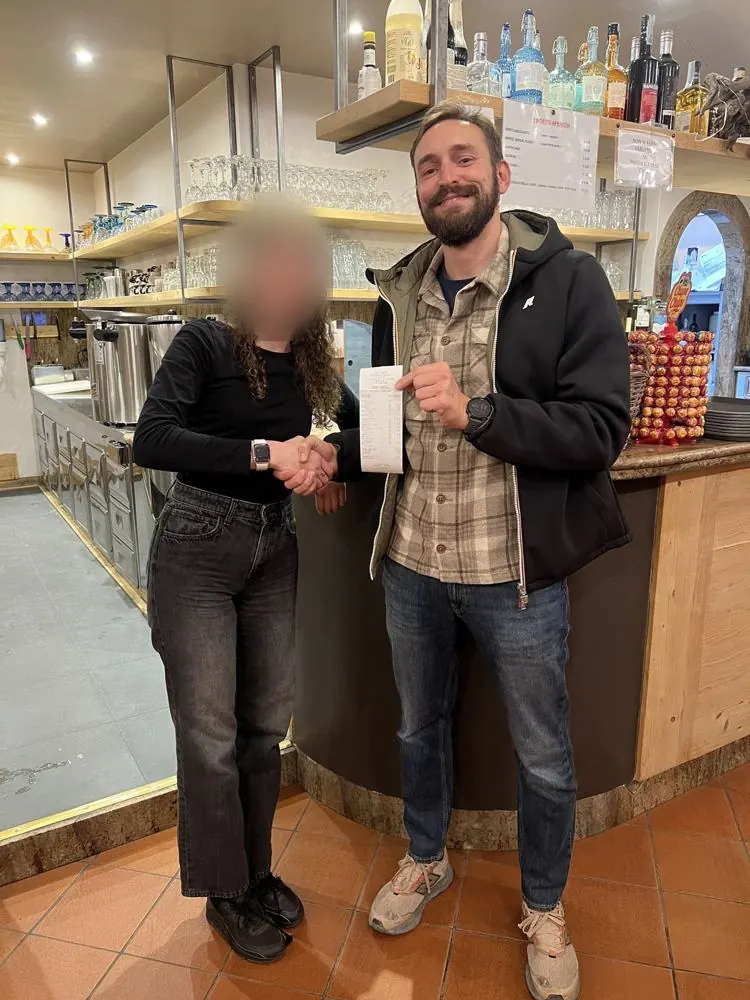
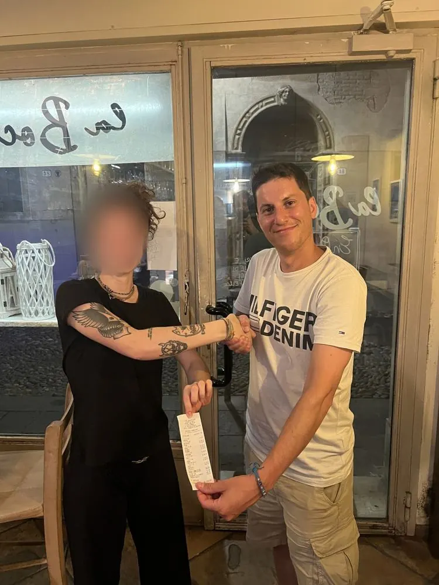
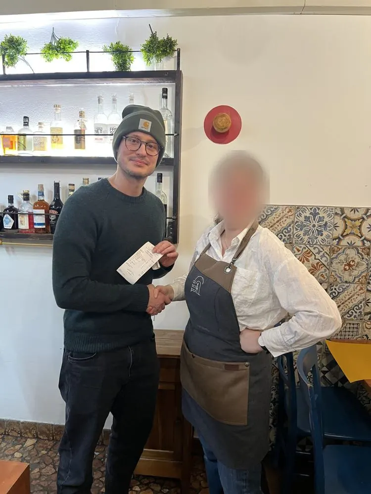
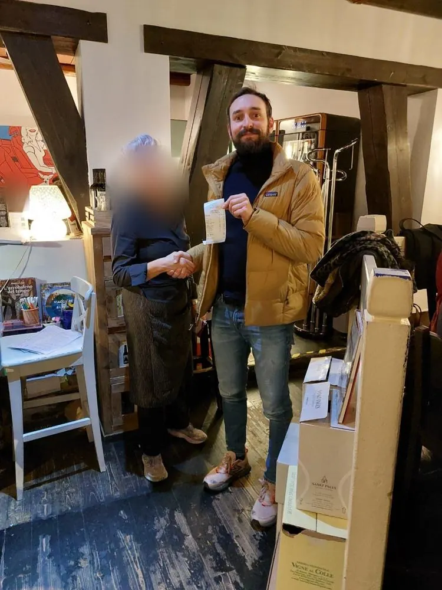
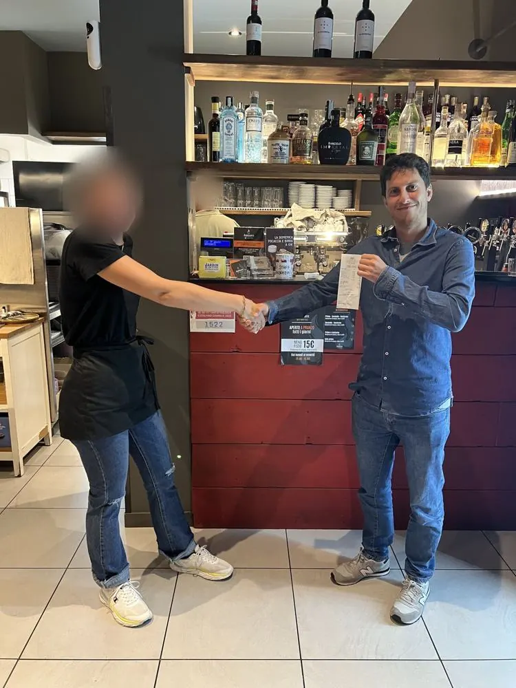
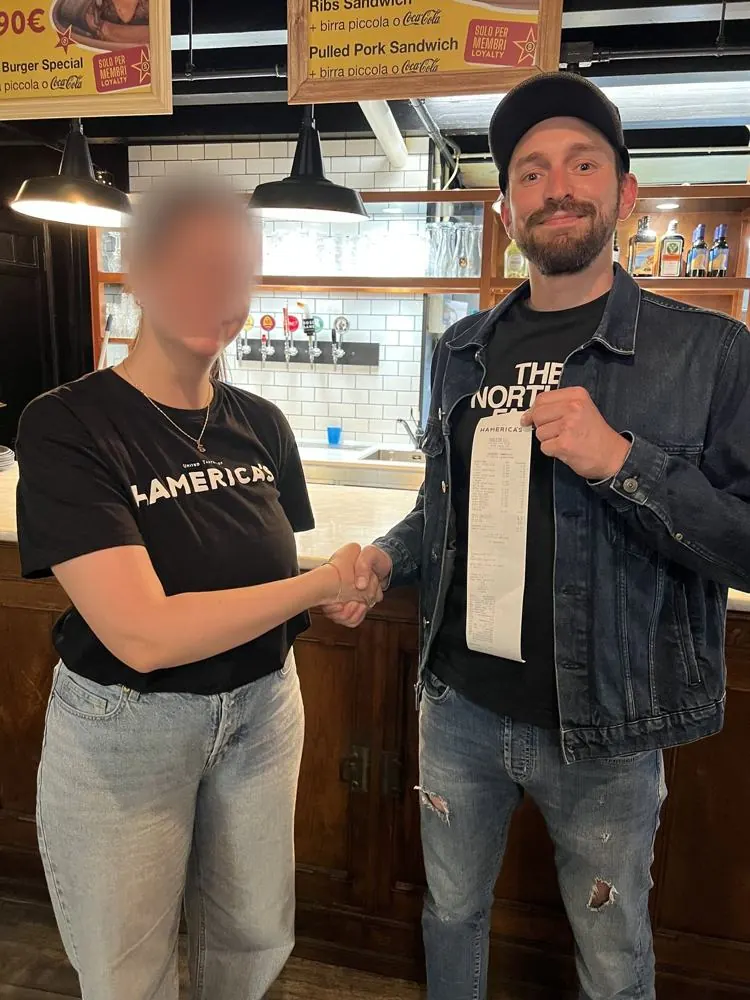
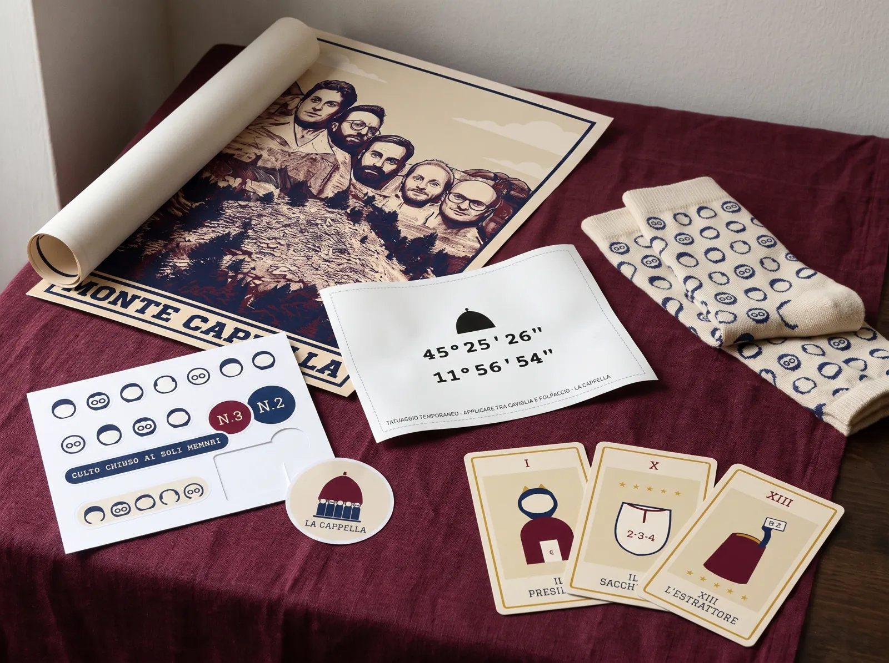

Sezione I · Prot. n. 001/2016
Atti di fondazione
Presso la palestra della Giotto Volley di Padova, alcuni individui si incontrano per giocare a pallavolo. L'evento, di per sé trascurabile, viene registrato alle coordinate 45°25'26", 11°56'54".
Nel 2016 i suddetti, constatata una comune inclinazione per l'umorismo di bassa lega, costituiscono "La Cappella di Giotto". Il nome unisce la squadra di provenienza e la celebre Cappella degli Scrovegni, con la quale la Cappella non intrattiene alcun rapporto, né culturale né di altro genere.
Con il tempo il nome si è ridotto a "La Cappella". La dicitura "di Giotto" sopravvive nel solo gruppo WhatsApp, per ragioni di archivio.
Luogo sacro
45°25'26"
11°56'54"
Le coordinate sono tatuate tra caviglia e polpaccio di ogni membro, a imperitura memoria e a eventuale identificazione.
Nota di protocollo
Il membro Daniel Pettenon non figura tra i fondatori. La sua ammissione è avvenuta nel 2017, con pratica regolarmente approvata e mai più ridiscussa.
Sezione II · Prot. n. 002/2016
Anagrafe dei membri
La Cappella conta cinque membri effettivi.
Regolamento della numerazione
Nella Cappella esistono soltanto i membri numero 2, 3 e 4. I numeri 1 e 5 non sono previsti, perché nessuno viene prima e nessuno viene dopo. Quando i membri presenti sono più di tre, i numeri si ripetono. L'assegnazione è soggetta a variazione senza preavviso.
I numeri su questa pagina cambiano a ogni caricamento.Sezione III · Prot. n. 003/2025
Albo dei presidenti
Il Presidente della Cappella non viene eletto: viene estratto. Ricopre la carica dal giorno in cui paga il conto fino alla cena successiva. Per tutta la durata del mandato i membri sono tenuti a chiamarlo "il Presidente".
Presidente in carica
- Presidente
- Daniel Pettenon, terzo mandato
- Programma
- Realizzare il sito della Cappella
- Stato
- ADEMPIUTO lo state guardando






Foto di insediamento, scattate al pagamento del conto con l'estrattore, come da regolamento. Fonte: album "I presidenti della cappella". Il volto dell'estrattore è omesso a tutela della sua riservatezza.
Nota: membri mai estratti finora: i Matteo.
Sezione IV · Regolamento delle cene, in vigore fino a nuova votazione
I 10 comandamenti della Cappella*
- Art. 1
Partecipanti
Alle cene partecipano tutti e soli i membri. Sono ammessi eredi di prima generazione di età inferiore ai 14 anni.
- Art. 2
Frequenza
Sono previsti almeno quattro pasti all'anno.
- Art. 3
Tetto di spesa
Il conto non può superare i 200 euro, cifra adeguabile al potere d'acquisto della Cappella. L'eccedenza è ripartita in parti uguali tra i quattro membri restanti.
- Art. 4
Estrazione
Chi paga viene estratto da una terza persona, individuata dalla Cappella e nominata all'unanimità.
- Art. 5
Il sacchetto
L'estrazione avviene con il sacchetto della Cappella. Lo porta il Presidente uscente. In caso di dimenticanza, offre un giro.
- Art. 6
Esenzione
Chi paga ha diritto a saltare l'estrazione successiva.
- Art. 7
Il Presidente
L'estratto diventa automaticamente Presidente della Cappella. Fino alla cena successiva tutti sono tenuti a chiamarlo "il Presidente".
- Art. 8
Calendario
Il Presidente, la sera dell'insediamento, fissa la data della cena successiva.
- Art. 9
Documentazione
Al pagamento del conto il Presidente si fa fotografare con il proprio estrattore. La foto va depositata nell'album "I presidenti della cappella".
- Art. 10
Autoproclamazione
Un membro può autoproclamarsi Presidente per giusta causa, valutata dalla Cappella. In caso di parità decide una sesta persona. Il Presidente autoproclamato paga anche il conto.
- Art. 11
Programma elettorale
A ogni cena i candidati presentano un programma con un impegno da mantenere entro la fine del mandato.
- Art. 12
Sanzioni
Il Presidente che non rispetta il programma offre un giro pre-cena alla cena successiva.
- Art. 13
Modifiche
Il regolamento si modifica a maggioranza. Chi propone la modifica non vota. In caso di parità si interpella la persona di fiducia, Simone Gallo.
* Il numero 10 è da intendersi in senso simbolico.
Sezione V · Archivio fotografico
La foto della Cappella
Durante una Beach Marathon di Bibione il membro Stefano Nosella risulta assente. Per compensare l'assenza, i quattro membri presenti, in condizioni di lucidità ridotta, si fotografano insieme a ogni ragazzo rasato incontrato al beach party. Le foto vengono inviate a Nosella in tempo reale. A fine serata se ne contano undici.
Regolamento della foto
- Ogni volta che i cinque membri si trovano insieme, la foto è obbligatoria.
- Con quattro membri la foto è comunque valida, purché si individui un quinto soggetto maschile.
- Il quinto soggetto esterno può partecipare una sola volta nella vita.
- La foto diventa l'immagine del gruppo WhatsApp e viene archiviata nell'album "Foto della cappella".
Foto archiviate a oggi: circa 96. In esposizione: 12.

Sezione VI · Articoli in omologazione
Spaccio ufficiale
Gli articoli ufficiali della Cappella sono in fase di omologazione. Indossarli non ti renderà membro, ma ti darà l'illusione di esserlo.
Apertura prevista: data da destinarsi
Alcuni articoli sono temporaneamente coperti in attesa di parere favorevole.
Sezione VII · Ufficio candidature
Ufficio candidature
La Cappella riceve domande di ammissione con regolarità. Ogni domanda viene protocollata, esaminata con la dovuta attenzione e trattata secondo la prassi consolidata.
Pratica n. · Esito:
Siamo spiacenti, non accettiamo candidature. La Cappella resta un culto chiuso ai soli membri.
Ti ringraziamo per l'interesse e per il tempo che hai deciso di perdere.
…
persone hanno inviato la candidatura per far parte della Cappella.
Nessuna è stata accolta.